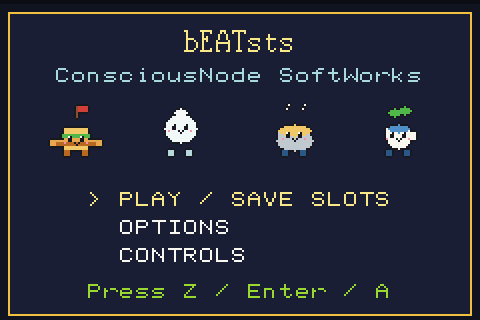
bEATsts
A monster-collecting RPG where the monsters are food.
Sandwiches, dumplings, noodles and soup. Unhinged, but wholesome.
One HTML file. No downloads, no network, no accounts. Keyboard or touch. Saves stay on your device.
Set a place at the table
You don't throw anything at a wild bEATst. You plate it: set a place, and if it likes the setting, it sits down and joins you. Fancier settings work better, from a humble Paper Plate all the way up to a Royal Banquet Setting.
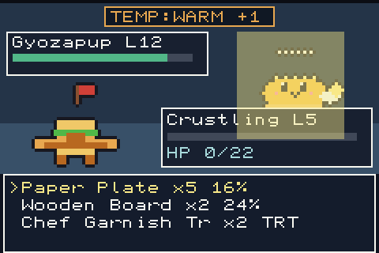
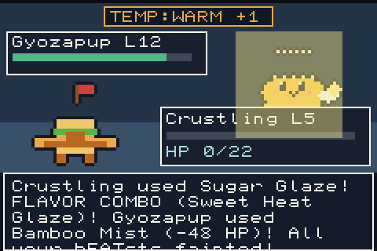
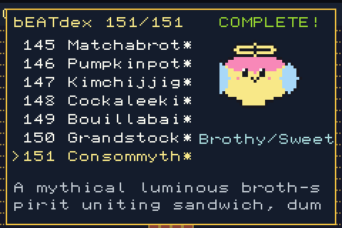
Pantrylia
Four regions, one per food family, each with its own towns, routes, kitchens, music and wildlife. Earn all 8 Kitchen Seals, outcook Rival Saffron, and face the Grand Tasting Hall.
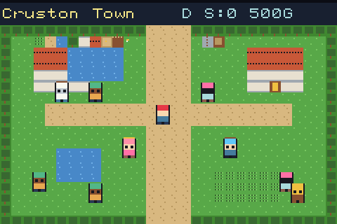
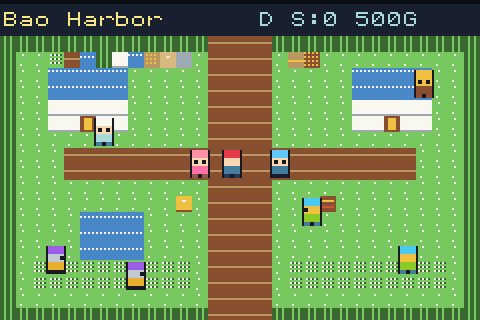
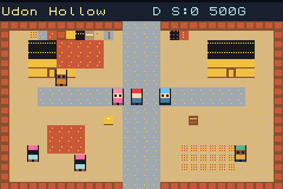
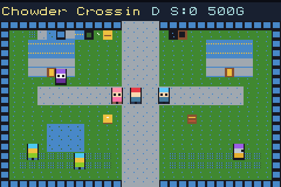
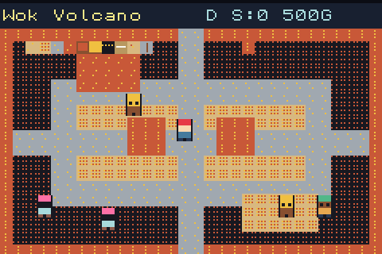
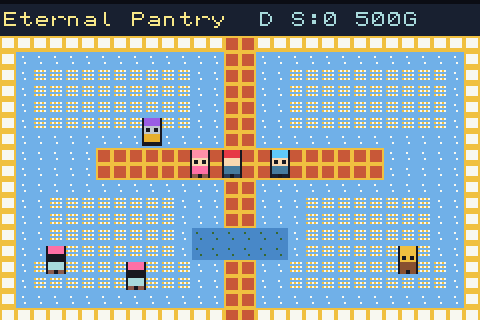
All 151
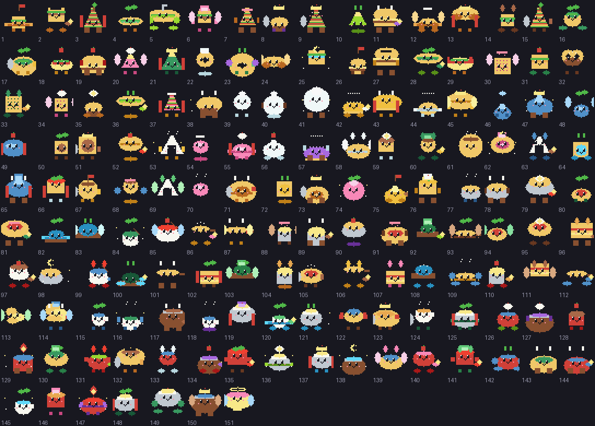
150 known species. Rumors say there's one more.
Controls
| Move | Arrow keys / WASD / on-screen D-pad |
| A (confirm, talk) | Z / Enter / Space |
| B (back) | X / Esc / Backspace |
| START (menu) | M |
| SELECT | N / Tab |
Three save slots, plus Export / Import save as a file, under the screen.